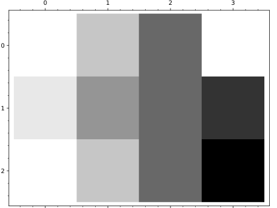

Primitive class for the matrix plot graphics type. See
matrix_plot? for help actually doing matrix plots.
INPUT:
xy_data_array – list of lists giving matrix values corresponding to
the grid
xrange – tuple of 2 floats indicating range for horizontal direction
(number of columns in the matrix). If None, the defaults are used as
indicated in matrix_plot().
yrange – tuple of 2 floats indicating range for vertical direction
(number of rows in the matrix). If None, the defaults are used as
indicated in matrix_plot().
options – dictionary of valid plot options to pass to constructor
EXAMPLES:
Note this should normally be used indirectly via matrix_plot():
sage:fromsage.plot.matrix_plotimportMatrixPlotsage:M=MatrixPlot([[1,3],[2,4]],(1,2),(2,3),options={'cmap':'winter'})sage:MMatrixPlot defined by a 2 x 2 data gridsage:M.yrange(2, 3)sage:M.xy_data_array[[1, 3], [2, 4]]sage:M.options(){'cmap': 'winter'}
>>>fromsage.allimport*>>>fromsage.plot.matrix_plotimportMatrixPlot>>>M=MatrixPlot([[Integer(1),Integer(3)],[Integer(2),Integer(4)]],(Integer(1),Integer(2)),(Integer(2),Integer(3)),options={'cmap':'winter'})>>>MMatrixPlot defined by a 2 x 2 data grid>>>M.yrange(2, 3)>>>M.xy_data_array[[1, 3], [2, 4]]>>>M.options(){'cmap': 'winter'}
Extra options will get passed on to show(), as long as they are valid:
sage:matrix_plot([[1,0],[0,1]],fontsize=10)Graphics object consisting of 1 graphics primitivesage:matrix_plot([[1,0],[0,1]]).show(fontsize=10)# These are equivalent
>>>fromsage.allimport*>>>matrix_plot([[Integer(1),Integer(0)],[Integer(0),Integer(1)]],fontsize=Integer(10))Graphics object consisting of 1 graphics primitive>>>matrix_plot([[Integer(1),Integer(0)],[Integer(0),Integer(1)]]).show(fontsize=Integer(10))# These are equivalent
If the matrix is sparse, colors only indicate whether an element is
nonzero or zero, so the plot represents the sparsity pattern of the
matrix.
If the matrix is dense, each matrix element is given a different
color value depending on its relative size compared to the other
elements in the matrix.
The default is for the lowest number to be black and the highest
number to be white in a greyscale pattern; see the information about
normalizing below. To reverse this, use cmap='Greys'.
The tick marks drawn on the frame axes denote the row numbers
(vertical ticks) and the column numbers (horizontal ticks) of the
matrix.
INPUT:
mat – a 2D matrix or array
xrange – (default: None) tuple of the horizontal extent
(xmin,xmax) of the bounding box in which to draw the matrix. The
image is stretched individually along x and y to fill the box.
If None, the extent is determined by the following conditions. Matrix
entries have unit size in data coordinates. Their centers are on integer
coordinates, and their center coordinates range from 0 to columns-1
horizontally and from 0 to rows-1 vertically.
If the matrix is sparse, this keyword is ignored.
yrange – (default: None) tuple of the vertical extent
(ymin,ymax) of the bounding box in which to draw the matrix.
See xrange for details.
The following input must all be passed in as named parameters, if
default not used:
cmap – a colormap (default: 'Greys'); the name of a predefined
colormap, a list of colors, or an instance of a matplotlib Colormap
The list of predefined color maps can be visualized in matplotlib’s
documentation. You
can also type importmatplotlib.cm;matplotlib.cm.datad.keys() to list
their names.
colorbar – boolean (default: False); show a colorbar or not
(dense matrices only)
The following options are used to adjust the style and placement
of colorbars. They have no effect if a colorbar is not shown.
colorbar_orientation – string (default: 'vertical');
controls placement of the colorbar, can be either ‘vertical’
or ‘horizontal’
colorbar_format – a format string, this is used to format
the colorbar labels
colorbar_options – dictionary of options for the matplotlib
colorbar API. Documentation for the matplotlib.colorbar module
has details.
norm – if None (default), the value range is scaled to the interval
[0,1]. If ‘value’, then the actual value is used with no
scaling. A matplotlib.colors.Normalize instance may
also passed.
vmin – the minimum value (values below this are set to this value)
vmax – the maximum value (values above this are set to this value)
flip_y – boolean (default: True); if False, the first row of the
matrix is on the bottom of the graph. Otherwise, the first row is on the
top of the graph.
subdivisions – if True, plot the subdivisions of the matrix as lines
subdivision_boundaries – list of lists in the form
[row_subdivisions,column_subdivisions], which specifies
the row and column subdivisions to use. If not specified,
defaults to the matrix subdivisions
subdivision_style – dictionary of properties passed
on to the line2d() command for plotting
subdivisions. If this is a two-element list or tuple, then it
specifies the styles of row and column divisions, respectively.
EXAMPLES:
A matrix over \(\ZZ\) colored with different grey levels:
sage:matrix_plot(matrix([[1,3,5,1],[2,4,5,6],[1,3,5,7]]))Graphics object consisting of 1 graphics primitive
>>>fromsage.allimport*>>>matrix_plot(matrix([[Integer(1),Integer(3),Integer(5),Integer(1)],[Integer(2),Integer(4),Integer(5),Integer(6)],[Integer(1),Integer(3),Integer(5),Integer(7)]]))Graphics object consisting of 1 graphics primitive

Here we make a random matrix over \(\RR\) and use cmap='hsv'
to color the matrix elements different RGB colors:
sage:matrix_plot(random_matrix(RDF,50),cmap='hsv')Graphics object consisting of 1 graphics primitive
>>>fromsage.allimport*>>>matrix_plot(random_matrix(RDF,Integer(50)),cmap='hsv')Graphics object consisting of 1 graphics primitive
By default, entries are scaled to the interval [0,1] before
determining colors from the color map. That means the two plots
below are the same:
sage:P=matrix_plot(matrix(2,[1,1,3,3]))sage:Q=matrix_plot(matrix(2,[2,2,3,3]))sage:P;QGraphics object consisting of 1 graphics primitiveGraphics object consisting of 1 graphics primitive
>>>fromsage.allimport*>>>P=matrix_plot(matrix(Integer(2),[Integer(1),Integer(1),Integer(3),Integer(3)]))>>>Q=matrix_plot(matrix(Integer(2),[Integer(2),Integer(2),Integer(3),Integer(3)]))>>>P;QGraphics object consisting of 1 graphics primitiveGraphics object consisting of 1 graphics primitive
However, we can specify which values scale to 0 or 1 with the
vmin and vmax parameters (values outside the range are
clipped). The two plots below are now distinguished:
sage:P=matrix_plot(matrix(2,[1,1,3,3]),vmin=0,vmax=3,colorbar=True)sage:Q=matrix_plot(matrix(2,[2,2,3,3]),vmin=0,vmax=3,colorbar=True)sage:P;QGraphics object consisting of 1 graphics primitiveGraphics object consisting of 1 graphics primitive
>>>fromsage.allimport*>>>P=matrix_plot(matrix(Integer(2),[Integer(1),Integer(1),Integer(3),Integer(3)]),vmin=Integer(0),vmax=Integer(3),colorbar=True)>>>Q=matrix_plot(matrix(Integer(2),[Integer(2),Integer(2),Integer(3),Integer(3)]),vmin=Integer(0),vmax=Integer(3),colorbar=True)>>>P;QGraphics object consisting of 1 graphics primitiveGraphics object consisting of 1 graphics primitive
We can also specify a norm function of ‘value’, which means that
there is no scaling performed:
sage:matrix_plot(random_matrix(ZZ,10)*.05,norm='value',colorbar=True)Graphics object consisting of 1 graphics primitive
>>>fromsage.allimport*>>>matrix_plot(random_matrix(ZZ,Integer(10))*RealNumber('.05'),norm='value',colorbar=True)Graphics object consisting of 1 graphics primitive
Matrix subdivisions can be plotted as well:
sage:m=random_matrix(RR,10)sage:m.subdivide([2,4],[6,8])sage:matrix_plot(m,subdivisions=True,....:subdivision_style=dict(color='red',thickness=3))Graphics object consisting of 1 graphics primitive
>>>fromsage.allimport*>>>m=random_matrix(RR,Integer(10))>>>m.subdivide([Integer(2),Integer(4)],[Integer(6),Integer(8)])>>>matrix_plot(m,subdivisions=True,...subdivision_style=dict(color='red',thickness=Integer(3)))Graphics object consisting of 1 graphics primitive
You can also specify your own subdivisions and separate styles
for row or column subdivisions:
sage:m=random_matrix(RR,10)sage:matrix_plot(m,subdivisions=True,subdivision_boundaries=[[2,4],[6,8]],....:subdivision_style=[dict(color='red',thickness=3),....:dict(linestyle='--',thickness=6)])Graphics object consisting of 1 graphics primitive
>>>fromsage.allimport*>>>m=random_matrix(RR,Integer(10))>>>matrix_plot(m,subdivisions=True,subdivision_boundaries=[[Integer(2),Integer(4)],[Integer(6),Integer(8)]],...subdivision_style=[dict(color='red',thickness=Integer(3)),...dict(linestyle='--',thickness=Integer(6))])Graphics object consisting of 1 graphics primitive
Generally matrices are plotted with the (0,0) entry in the upper
left. However, sometimes if we are plotting an image, we’d like
the (0,0) entry to be in the lower left. We can do that with the
flip_y argument:
sage:matrix_plot(identity_matrix(100),flip_y=False)Graphics object consisting of 1 graphics primitive
>>>fromsage.allimport*>>>matrix_plot(identity_matrix(Integer(100)),flip_y=False)Graphics object consisting of 1 graphics primitive
A custom bounding box in which to draw the matrix can be specified using
the xrange and yrange arguments:
If the horizontal and vertical dimension of the image are very different,
the default aspect_ratio=1 may be unsuitable and can be changed to
automatic:
sage:matrix_plot(random_matrix(RDF,2,2),(-100,100),(0,1),....:aspect_ratio='automatic')Graphics object consisting of 1 graphics primitive
>>>fromsage.allimport*>>>matrix_plot(random_matrix(RDF,Integer(2),Integer(2)),(-Integer(100),Integer(100)),(Integer(0),Integer(1)),...aspect_ratio='automatic')Graphics object consisting of 1 graphics primitive
It also works if you lift it to the polynomial ring:
sage:matrix_plot(m.change_ring(GF(389)['x']),cmap='Oranges')# needs sage.rings.finite_ringsGraphics object consisting of 1 graphics primitive
>>>fromsage.allimport*>>>matrix_plot(m.change_ring(GF(Integer(389))['x']),cmap='Oranges')# needs sage.rings.finite_ringsGraphics object consisting of 1 graphics primitive
We have several options for colorbars:
sage:matrix_plot(random_matrix(RDF,50),colorbar=True,....:colorbar_orientation='horizontal')Graphics object consisting of 1 graphics primitive
>>>fromsage.allimport*>>>matrix_plot(random_matrix(RDF,Integer(50)),colorbar=True,...colorbar_orientation='horizontal')Graphics object consisting of 1 graphics primitive
sage:matrix_plot(random_matrix(RDF,50),colorbar=True,colorbar_format='%.3f')Graphics object consisting of 1 graphics primitive
>>>fromsage.allimport*>>>matrix_plot(random_matrix(RDF,Integer(50)),colorbar=True,colorbar_format='%.3f')Graphics object consisting of 1 graphics primitive
The length of a color bar and the length of the adjacent
matrix plot dimension may be quite different. This example
shows how to adjust the length of the colorbar by passing a
dictionary of options to the matplotlib colorbar routines.
sage:m=random_matrix(ZZ,40,80,x=-10,y=10)sage:m.plot(colorbar=True,colorbar_orientation='vertical',....:colorbar_options={'shrink':0.50})Graphics object consisting of 1 graphics primitive
>>>fromsage.allimport*>>>m=random_matrix(ZZ,Integer(40),Integer(80),x=-Integer(10),y=Integer(10))>>>m.plot(colorbar=True,colorbar_orientation='vertical',...colorbar_options={'shrink':RealNumber('0.50')})Graphics object consisting of 1 graphics primitive
Here we plot a random sparse matrix:
sage:sparse=matrix(dict(((randint(0,10),randint(0,10)),1)....:foriinrange(100)))sage:matrix_plot(sparse)Graphics object consisting of 1 graphics primitive
>>>fromsage.allimport*>>>sparse=matrix(dict(((randint(Integer(0),Integer(10)),randint(Integer(0),Integer(10))),Integer(1))...foriinrange(Integer(100))))>>>matrix_plot(sparse)Graphics object consisting of 1 graphics primitive
sage:A=random_matrix(ZZ,100000,density=.00001,sparse=True)sage:matrix_plot(A,marker=',')Graphics object consisting of 1 graphics primitive
>>>fromsage.allimport*>>>A=random_matrix(ZZ,Integer(100000),density=RealNumber('.00001'),sparse=True)>>>matrix_plot(A,marker=',')Graphics object consisting of 1 graphics primitive
As with dense matrices, sparse matrix entries are automatically
converted to floating point numbers before plotting. Thus the
following works: